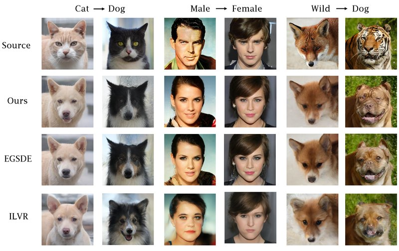

Projects
Research projects and code
Contrastive-SDE: Guiding Stochastic Differential Equations with Contrastive Learning for Unpaired Image-to-Image Translation
A time-dependent contrastive model, trained with SimCLR to keep domain-invariant features and discard domain-specific ones, guides a pretrained score-based SDE for unpaired image-to-image translation. It is comparable to the state of the art on several metrics across three tasks, converges faster, and needs no labels or classifier training.

Deep Learning Based Link Prediction for Minimizing Maximum Betweenness
We predict the missing link whose addition most reduces a network's maximum betweenness, without recomputing betweenness for every candidate edge. A GraphSAGE encoder feeds two MLPs that classify and rank missing edges, reaching 0.92 mAP@100 on scale-free Barabási–Albert networks.
Other Projects
Diffusion TPP for Event Prediction
An unofficial implementation of Non-Autoregressive Diffusion-based Temporal Point Processes for continuous-time, long-term event prediction.
View on GitHub →Telugu-to-English Transliteration
A GRU model with attention, trained in PyTorch, that transliterates Telugu to English. It is deployed in an Android app that reads Telugu text from images with OCR.
View on GitHub →